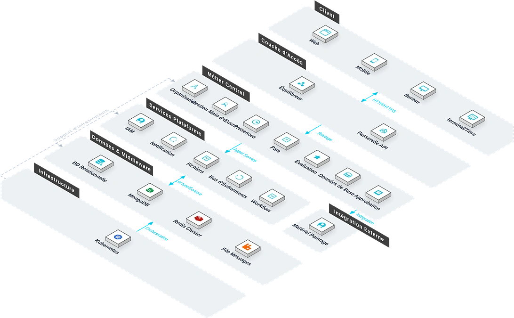

Le Système de Gestion RH est la plateforme numérique centrale pour la gestion des ressources humaines. Face aux défis complexes des structures multi-organisationnelles, de la conformité locale et du déploiement transfrontalier du personnel rencontrés par les multinationales opérant en Afrique, le système intègre la gestion organisationnelle, l'administration du personnel, les présences et la paie avec les workflows d'approbation. Il supporte toutes les langues officielles mondiales et les langues autochtones d'Afrique de l'Ouest telles que le haoussa et le yoruba, permettant une gestion du cycle de vie complet du personnel et aidant les entreprises à améliorer l'efficacité opérationnelle RH tout en garantissant la conformité.
Caractéristiques Clés
Le système couvre six modules : structure organisationnelle, gestion du personnel, présences, paie, données de base et approbation.
Structure Organisationnelle
Gestion unifiée de toutes les équipes de chantier, incluant création, maintenance des informations, désignation des responsables et suivi des statuts d'entrée/sortie.
Gestion du Personnel
Établir et maintenir les profils numériques nominatifs du personnel d'encadrement et des ouvriers, couvrant transferts, avertissements et procédures de licenciement en ligne.
Présences
Collecte via tourniquets à reconnaissance faciale, intégration contrôle d'accès, GPS et pointage mobile. Génération de rapports individuels et d'équipe, support du planning, vérification et analyse des régularisations.
Paie
Génération automatique des bulletins mensuels selon présences et récompenses/sanctions, support de la validation, confirmation des congés et versement des primes.
Données de Base
Maintenance des référentiels (types d'entreprise, postes, métiers, jours fériés), fournissant des données standardisées pour la classification, les permissions et le calcul de paie.
Approbation
Les chefs de chantier soumettent les informations via l'application mobile, et les responsables RH peuvent compléter l'onboarding, la confirmation et les ajustements de salaire en un clic.
Architecture du Système

La paie est réglée dans la devise du projet concerné / Un même projet n'utilise qu'une seule devise
Le paiement et le remboursement sont effectués hors ligne / Le système exporte uniquement les documents et rapports
Scénarios d'Application
Adapté à la gestion multi-niveaux d'organisation, à la gestion transnationale du personnel et de la paie, à la présence intelligente avec intégration d'appareils et à l'approbation RH en ligne pour les grands groupes de construction.
Gestion Multi-Niveaux
Les groupes multinationaux avec filiales et chantiers sur plusieurs pays africains maintiennent des organisations à trois niveaux (groupe, régional, projet), avec flux inter-niveaux et attribution précise des permissions.
Personnel & Paie Transnationaux
Pour les effectifs mixtes chinois/étrangers, le système supporte les dossiers nominatifs, la paie calculée dans la devise du projet, les interfaces en haoussa/yoruba et l'adaptation aux jours fériés locaux.
Présence Intelligente
Les tourniquets faciaux et les appareils GPS sur site envoient les données en temps réel au système, générant les rapports de présence individuels et d'équipe pour alimenter la paie.
Approbation RH en Ligne
Les chefs de chantier soumettent les demandes de transfert, confirmation et ajustement de salaire via l'appli mobile ; les responsables RH valident en un clic avec piste d'audit complète.
Avantages et garantie
Conformité locale africaine
Le moteur de conformité indépendant intègre le droit du travail africain, la gestion des pointages sur plusieurs fuseaux horaires et le calcul automatique des impôts locaux, s’adaptant à la comptabilisation des salaires en naira/dollar américain/yuan chinois et au mode de rémunération basé sur le règlement par projet.
Couverture complète multi-langues
Prend en charge toutes les langues officielles du monde ainsi que les langues ethniques locales d’Afrique de l’Ouest telles que le haoussa et le yoruba, pour une utilisation sans obstacle par les équipes transnationales.
Gestion unifiée des pointages
La fonction de pointage prend en charge plusieurs méthodes : reconnaissance faciale, interconnexion avec le contrôle d’accès, géolocalisation GPS, etc. Les données de pointage provenant de ces trois sources sont automatiquement regroupées et converties avec précision entre les fuseaux horaires.
Configuration modulaire flexible
Les modules fonctionnels peuvent être configurés de manière flexible en fonction de la taille de l’entreprise et de ses spécificités métier, pour une mise en ligne rapide et une réduction du cycle de mise en œuvre.
Interconnexion avec les systèmes des équipements
Connexion transparente avec les équipements de pointage et de contrôle d’accès grand public chinois ainsi que les systèmes financiers, pour un partage et un échange de données fluides et une réduction des saisies manuelles.
Architecture technique à trois couches
La couche serveur, la couche Web et la couche mobile sont découplées par niveaux, ce qui facilite l’extension et la maintenance, et prend en charge les itérations fonctionnelles continues ultérieures.
Étude des besoins
Nous étudions en profondeur l’organisation de l’entreprise, sa structure de rémunération et son mode de pointage, et structurons les règles de comptabilité multi-fuseaux horaires et multi-devises.
Déploiement du système
Prend en charge le déploiement local et le déploiement sur cloud, s’adaptant à l’environnement réseau local africain et aux exigences de conformité des données.
Formation et mise en ligne
Nous proposons une formation différenciée pour les administrateurs et les utilisateurs finaux, couvrant la configuration de l’organisation, la gestion des pointages, la comptabilisation des salaires et l’utilisation des rapports.
Maintenance continue
Support technique distant 7j/7 et 24h/24, inspections régulières du système et itérations fonctionnelles, mise à jour synchronisée du moteur de conformité avec l’évolution des réglementations locales.
Sécurité des données
Stockage chiffré des données du personnel et de rémunération, gestion des autorisations par niveaux, enregistrement complet des journaux d’opérations, prenant en charge l’audit conforme.
Mise à niveau et extension
Prend en charge l’intégration flexible de nouveaux équipements de pointage et de nouvelles règles fiscales, étendant les dimensions de gestion selon les besoins d’expansion de l’entreprise.